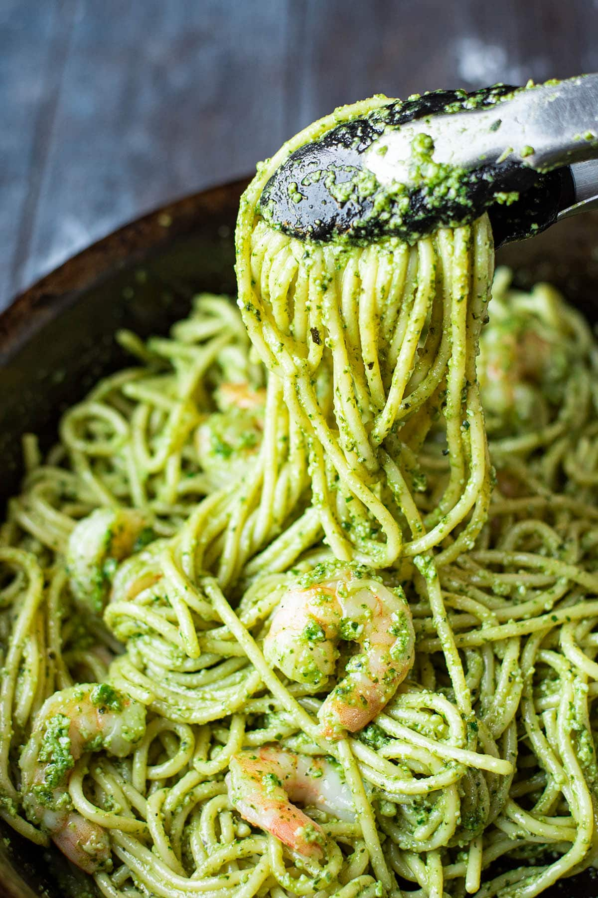

Pesto Pasta

Description
Pesto pasta is easy to make and full of flavor. It tastes good hot or cold!
Ingredients
- 1 (16 ounce) package pasta
- 2 tablespoons olive oil
- 1/2 cup chopped onion
- 2 1/2 tablespoons pesto
- salt and ground black pepper to taste
- 2 tablespoons grated Parmesan cheese
Steps
- Fill a large pot with lightly salted water and bring to a rolling boil. Stir in pasta and return to a boil. Cook pasta uncovered, stirring occasionally, until tender yet firm to the bite, about 8 to 10 minutes. Drain and transfer into a large bowl.
- Meanwhile, heat oil in a frying pan over medium-low heat. Add onion; cook and stir until softened, about 3 minutes.
- Stir in pesto, salt, and pepper until warmed through.
- Add pesto mixture to hot pasta; stir in grated cheese and toss well to coat.
Home